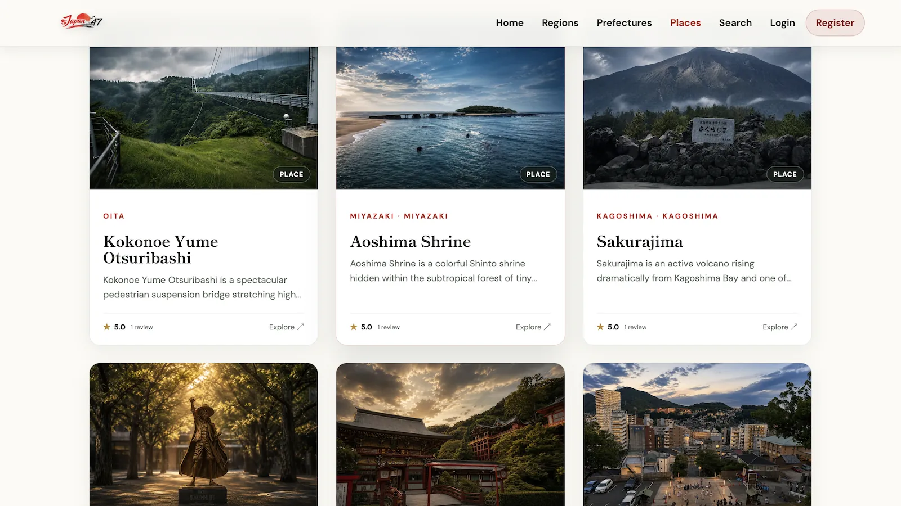
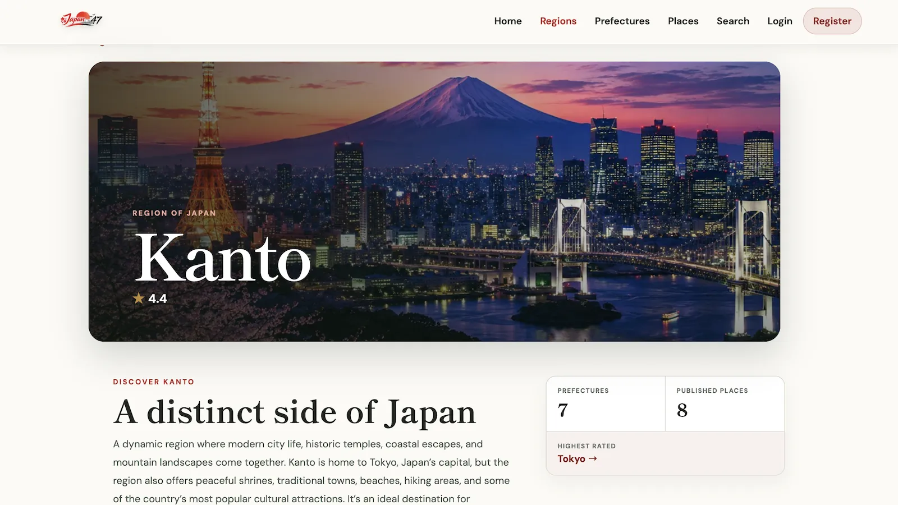
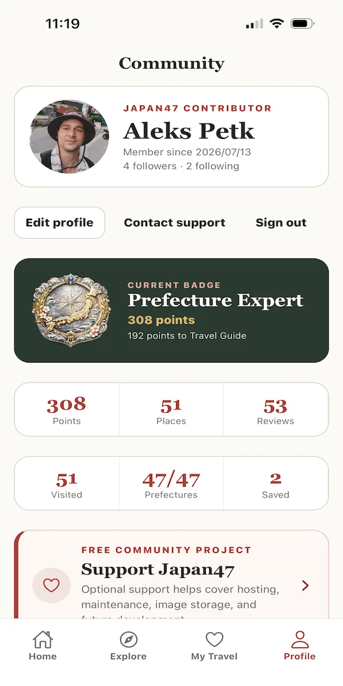
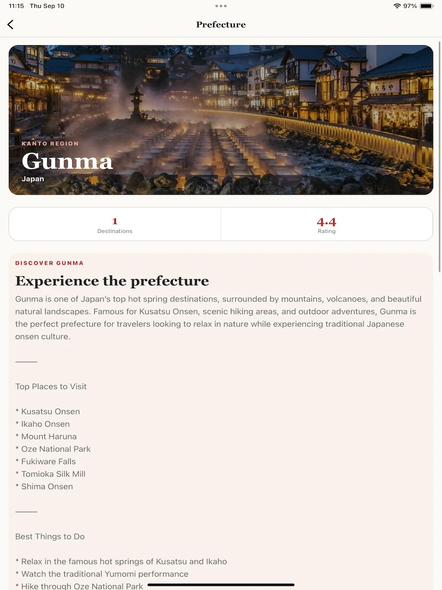

Regions
Browse Japan through its 9 regions.
Featured project / Travel platform
A community travel guide for Japan’s 9 regions and 47 prefectures — discover destinations, contribute places, and plan trips on web, iOS, and Android.

Overview
Japan47 is a community travel guide for Japan’s 9 regions and 47 prefectures. Users can discover destinations, contribute places and reviews, and keep track of places they have saved or visited. A shared Django REST API powers both the React website and the native Expo mobile app.
Travel information for Japan is often scattered and not organized around the country’s geographic structure. Japan47 organizes destinations through Region → Prefecture → Place, while combining community contributions, moderation, search, and personal travel planning in one product.
I designed and built Japan47 end to end as a solo engineer, including the domain model, Django REST APIs, React web frontend, Expo iOS/Android client, authentication, media handling, and Docker-based deployment.
I also implemented supporting infrastructure and integrations such as transactional email, analytics, caching, image processing, and mobile store build configuration.
Core experience
From national regions down to personal itineraries — the product is built around a clear geographic hierarchy and community contribution.
Browse Japan through its 9 regions.
Explore all 47 prefectures within the regional hierarchy.
Browse, search, filter, and open detailed destination pages.
Authenticated users can submit and edit places through a moderated publishing workflow.
Users can write reviews, vote reviews as helpful, follow contributors, and build contribution levels through badges and points.
Save favorites, mark places as visited, organize collections, and create multi-stop itineraries.
A native Expo React Native app provides the core Japan47 experience on iOS and Android using the same backend API.
Image uploads, optimized thumbnails, support tickets, and platform-specific optional tipping are integrated into the product.
Web experience
Selected views from the React web experience — discovery, hierarchy, and place detail.


Mobile experience
A native Expo / React Native client delivers the core Japan47 experience on iOS and Android against the same Django REST API.


Technology
An API-first stack: Django REST on the server, React on the web, Expo on mobile.
Contribution
End-to-end ownership — from product architecture to store-ready mobile clients and production deployment.
Designed Japan47 as an API-first travel product. One Django REST backend powers both the React website and the Expo mobile application around a Region → Prefecture → Place domain model.
Built the React 19 + Vite single-page application with React Router, including discovery, search, authentication, place submissions, reviews, profiles, and personal travel management.
Implemented versioned Django REST Framework APIs under /api/v1 with JWT authentication, OpenAPI documentation, moderation workflows, reviews, favorites, collections, itineraries, badges, and support functionality.
Built a custom CSS responsive system so the web experience adapts cleanly across desktop and smaller screens without relying on a UI framework.
Built a native Expo / React Native client in TypeScript with file-based navigation, secure JWT storage, image uploads, and shared backend APIs for the core travel experience.
Implemented email/password JWT authentication with email verification, password reset, refresh-token handling, logout, account deletion, and TOTP 2FA for staff administration.
Packaged the production stack with Docker Compose using PostgreSQL, Redis, Django/Gunicorn, the React production build, and Nginx for deployment to japan47.alekspetk.com.
Added image processing and thumbnails, Redis caching, frontend prerendering, Resend transactional email, Umami analytics, Ko-fi support links, and iOS in-app tipping.
Try it
Open the live website or download the apps from the official stores.